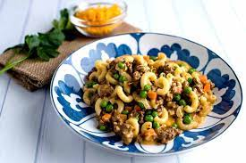

Beefy Mac N Peas

A family favorite
Parents and kids alike love this twist on an intercontinental classic!
By adding some extra protein and veggies this becomes a hearty, tasty and quick meal to make for yourself or your family.
Ingredients
- 1-2 boxes of Annie's Organic Mac and Cheese
- 1 pound of lean ground beefy
- 1 bag of flash-frozen peas
- Salt and pepper to taste
Steps
- Bring water in a medium saucepan to boil.
- While water is boiling add ground beef to skillet and cook until browned.
- Add pasta from box to saucepan and cook until desired tenderness.
- Once pasta is cooked, drain in colander and set aside.
- Add cheese mix, milk and butter from box browned ground beef and stir thoroughly.
- Add pasta and frozen peas to mixture and heat until cheese is melted.
- Season to taste and serve!